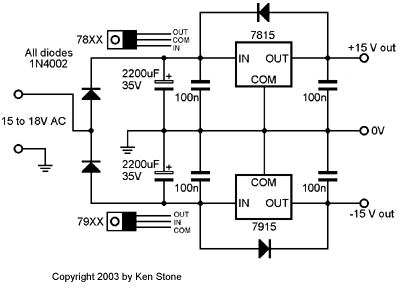

|
The Stomp Box Adapter has been designed to allow some of the regular CGS modules to be used as guitar effects. It has an integral power supply and provides two channels of amplification to bring guitar signal levels up to those used by synthesizers, and two attenuators to drop them again, post effect. It also provides the essential bypass circuit. Some ideas on how to use this module: CGS filters and wave multipliers are probably the most likely candidates for combination with this module. For example, two Steiner VCFs could be used to give a stereo/two channel filter. The filter of course could then be driven by an LFO such as the super psycho for further effects. Combined with this board, the Metalshop wave multiplier could be used as a radical fuzz unit for solo work. This particular combination would not be very effective on chords though, as the resultant waveform becomes rather muddy. A little on how it works:
The schematic of the core of the Stomp Box Adapter.

The preamplifiers of the stomp box adapter are basic non-inverting amplifiers with an AC gain of 20, and suppression capacitors as needed. Their input impedance is approximately 150k. The bypass circuit is relay based and switches both preamplifiers. To do this, the output jacks are either connected directly to the input jacks or to the output attenuators of the internal circuitry. This is not what is sometimes referred to as true bypass - the inputs to the preamplifiers remain connected to the input jacks at all times. The power supply section of the circuit is a basic half-wave rectifier followed by a pair of standard voltage regulators. While 7815 and 7915 regulators are specified, 7812 and 7912 would be equally appropriate. Most CGS circuits will work perfectly well on the lower voltage, and the lower voltage requirement may allow the use of a power pack (plug-pack, wall-wart, or line-lump) that is to hand. A rough guide is to use a power pack that has its voltage specified as being equal to or higher than that on the regulators - i.e. a 15V A.C. line-lump would be suitable for a power supply built using 7815 and 7915 regulators. The power pack must be A.C. (alternating current output). D.C. power packs will not work. If you hear excessive hum in the signal output, the power-pack chosen is inadequate for the job. See the +/- 15V Power Supply for further description of the the basic power supply circuit.
Construction
The component overlay. Connections can be determined from the circuit diagram. This is one of those PCBs than can be assembled in a number of different ways to suit the builder's needs. The value of R_CO should be around 1/5 of that of the relay coil if using a 12 volt relay on a 15 volt supply. If using a 12 volt supply, R_CO needs to be a wire link. The relay is in bypass mode by default, or when there is no power. Connecting the pads marked "BYPASS SW" together via a switch will activate the effect. Some DIP relays are polarized - specifically they will only operate with current flowing though their coil in one direction. If the relay, once installed, refuses to close when the switch is closed, reverse the connections to the relay coil by cutting the tracks and jumpering them. (*) The circuit diagram shows a pair of 1M resistors at the inputs of the buffers. Add these if you have thumping problems when plugging something into the unit. These resistors are not on the PCB and will need to be tacked onto the PCB side of the board below the socket. As supplied, the PCB is designed to pass a stereo signal in via J1 and out via J6. If you want a mono signal, you may leave out the RING preamplifier. If you still want two inputs, but wish to use mono jacks, cut the trace to the ring connection of J1 and jumper it to the tip connection of another jack (e.g. J2) instead. The same can be done to the output socket. The amplified signals are available at pads marked SIG 1 and SIG 2. These are wired to the inputs of the piggyback CGS filter boards (or whatever it is you are adapting). The output from the piggyback boards are taken to RO (Ring out) and TO (Tip out). Needless to say, if you are making a mono effect, just use the tip connections (SIG 1 and TO). The remaining jacks are optional, to be used for external control voltages or whatever. Before you start assembly, check the board for etching faults. Look for any shorts between tracks, or open circuits due to over etching. Take this opportunity to sand the edges of the board if needed, removing any splinters or rough edges. When you are happy with the printed circuit board, construction can proceed as normal, starting with the resistors first, followed by the IC socket if used, then moving onto the taller components. Take particular care with the orientation of the polarized components such as electrolytics, diodes, transistors and ICs. When inserting ICs into sockets, take care not to accidentally bend any of the pins under the chip. Also, make sure the notch on the chip is aligned with the notch marked on the PCB overlay.
Notes:
Parts list This is a guide only. Parts needed will vary with individual constructor's needs. If anyone is interested in buying these boards, please check the PCBs for Sale page to see if I have any in stock.
Can't find the parts? See the parts FAQ to see if I've already answered the question. Also see the CGS Synth discussion group.
Article, art & design copyright 2001 by Ken Stone
| ||||||||||||||||||||||||||||||||||||||||||||||||||||